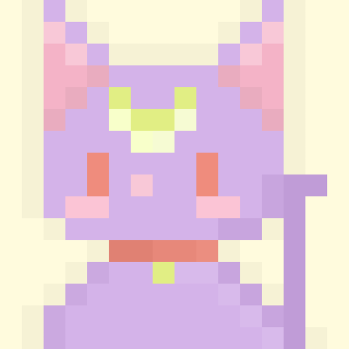

John Smith
เป็นนักศึกษาที่มหาวิทยาลัยนเรศวร
ประสบการณ์
- Internship: Software Developer ที่ ABC Company (2022)
- โครงการ: พัฒนาแอปพลิเคชันติดตามเวลา
- ความสำเร็จ: ได้รับรางวัล Top Performer ระหว่างฝึกงาน
ทักษะ
- Programming: Java, Python, Dart
- Database: MySQL, Firebase
- Frontend: Flutter, React
ความสนใจ
แสดงรายการความสนใจของคุณเพื่อช่วยให้เครือข่ายเข้าใจสิ่งที่คุณชื่นชอบ